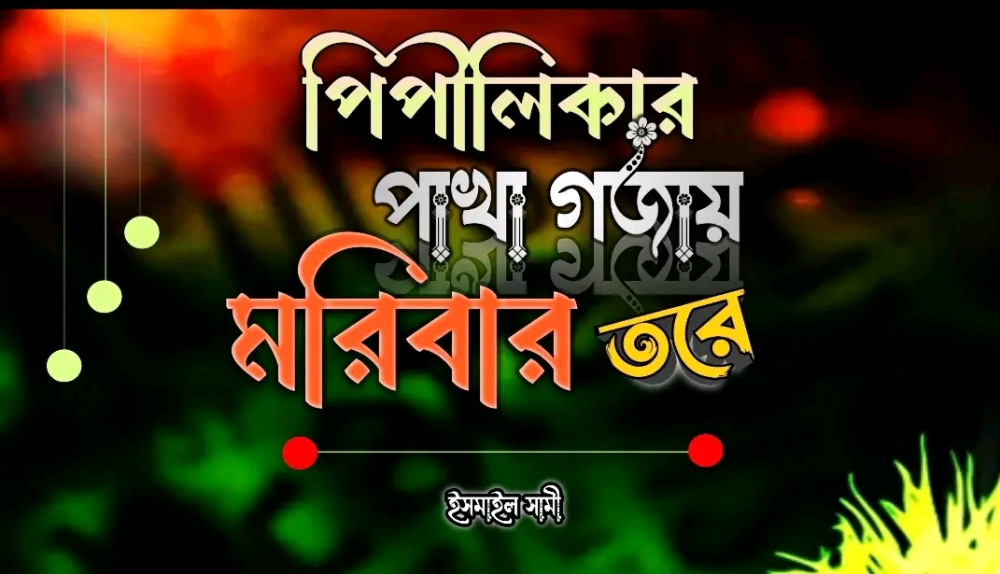
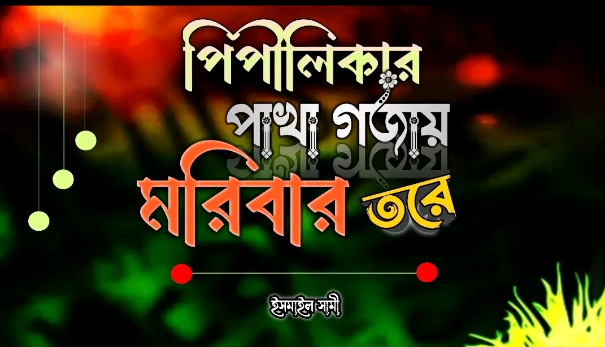

Welcome!
Ismail Saamie exists at the quiet intersection of inquiry and devotion—a journey defined not by the clamor of recognition, but by the steady pulse of service, learning, and responsibility. From his formative years, he has gravitated toward the sanctuary of truth and the rigor of self-reliance, choosing the depth of disciplined effort over the fragility of display.
His path is a delicate navigation between the ancestral echoes of Islamic scholarship and the complex exigencies of modern thought. To him, this duality is no badge of honor, but a sacred equilibrium requiring a patient heart and an ethical compass. A profound reverence for the Ummah and an unyielding fidelity to knowledge are the silent undercurrents of his speech, his writing, and his daily walk.
At seventeen, standing in the year 2026, he remains a student of the vast unknown, his spirit grounded in the divine and his manner cloaked in a deliberate restraint. Humility is his lived liturgy—an active practice found in the stillness of his listening and the sincerity of his studies. This website is not a monument to achievement, but a window into a soul in transit; it offers reflections born of a quiet conscience and a steadfast resolve to be a source of benefit to the world.
His path is a delicate navigation between the ancestral echoes of Islamic scholarship and the complex exigencies of modern thought. To him, this duality is no badge of honor, but a sacred equilibrium requiring a patient heart and an ethical compass. A profound reverence for the Ummah and an unyielding fidelity to knowledge are the silent undercurrents of his speech, his writing, and his daily walk.
At seventeen, standing in the year 2026, he remains a student of the vast unknown, his spirit grounded in the divine and his manner cloaked in a deliberate restraint. Humility is his lived liturgy—an active practice found in the stillness of his listening and the sincerity of his studies. This website is not a monument to achievement, but a window into a soul in transit; it offers reflections born of a quiet conscience and a steadfast resolve to be a source of benefit to the world.


.jpg) 
